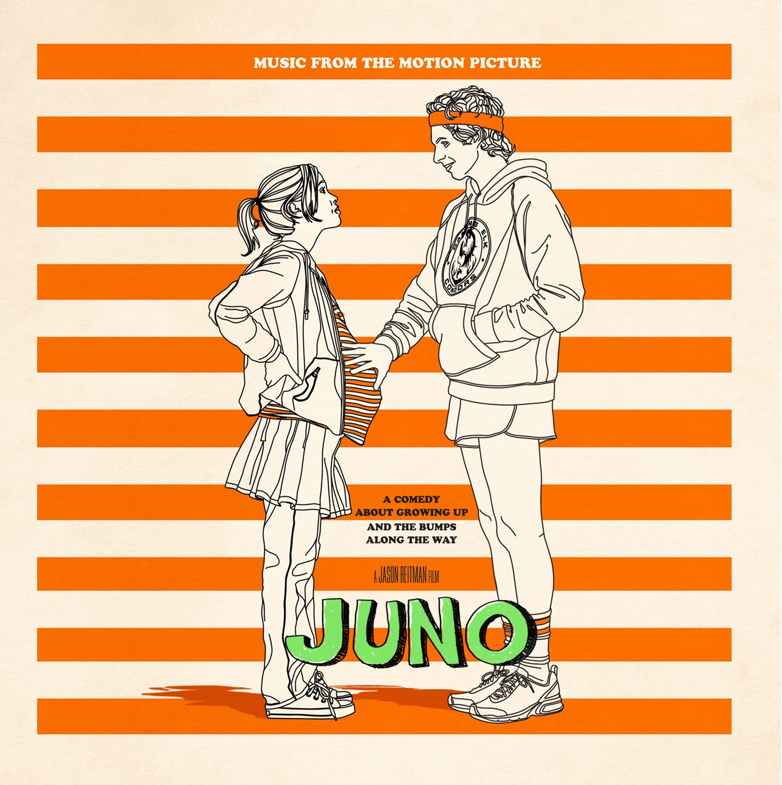
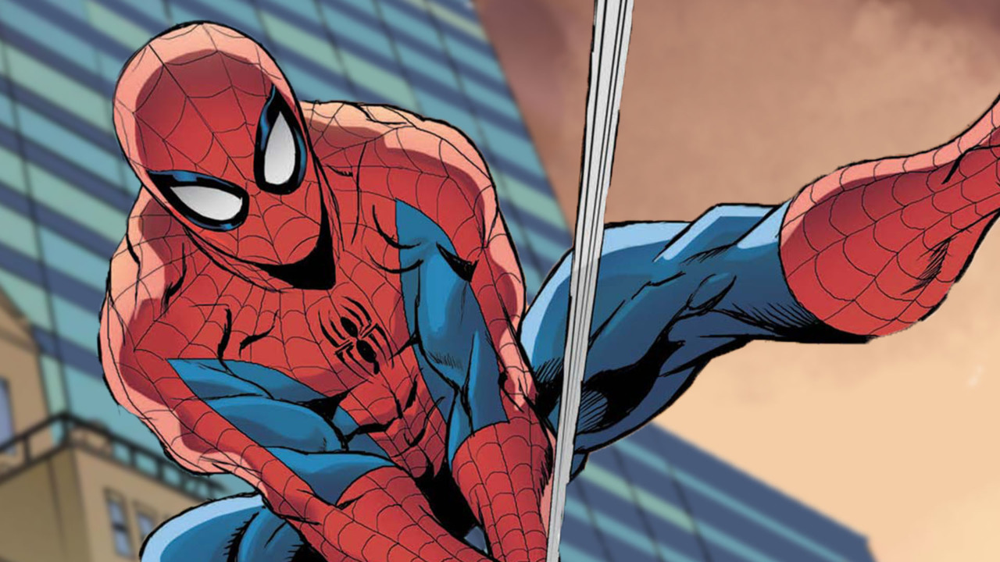

Música favorita
É quase impossível saber qual é! A cada música diferente que ela me mostra, ela diz ser sua favorita. Mas sei que bem recentemente ela me disse que a favorita dela no momento é "Me And Your Mama" de Childish Gambino. Que, inclusive, tenho quase certeza que fui eu quem a apresentou.
Filme favorito
Seu filme favorito é "Juno". Juno é um filme sobre uma garota que engravida sem querer, mas ao invés de abortar decide ser "barriga de aluguel" para uma outra moça que quer muito ter um filho. Assisti junto com ela, e realmente é um ótimo filme.
Herói favorito
Seu herói favorito é o Homem Aranha da Marvel, mais especificamente o do Andrew Garfield. Ela até tinha um "crushzinho" nele no passado, mas ele perdeu a chance agora 😎.
Grupo musical favorito
Seu grupo musical favorito é o LOONA, ela sabe de quase tudo a respeito. Pelo incrível que pareça ela não é uma kpoper (ufa!) mas adora esse grupo musical. Dizem-me os pássaros que sua integrante favorita é a Chuu.
Animais
Franguito é muito apaixonada por animais, desde o mais feio e estranho até o mais lindo e fofo. Não pode ver um que já quer ir fazer carinho. Ela até mesmo coleciona insetos, bizarra! Ela tem duas cachorrinhas na qual ama muito, uma se chama "Farofa" e a outra se chama "Cléo" (as duas estão nas laterais da página se estiver sendo vista por uma tela grande).